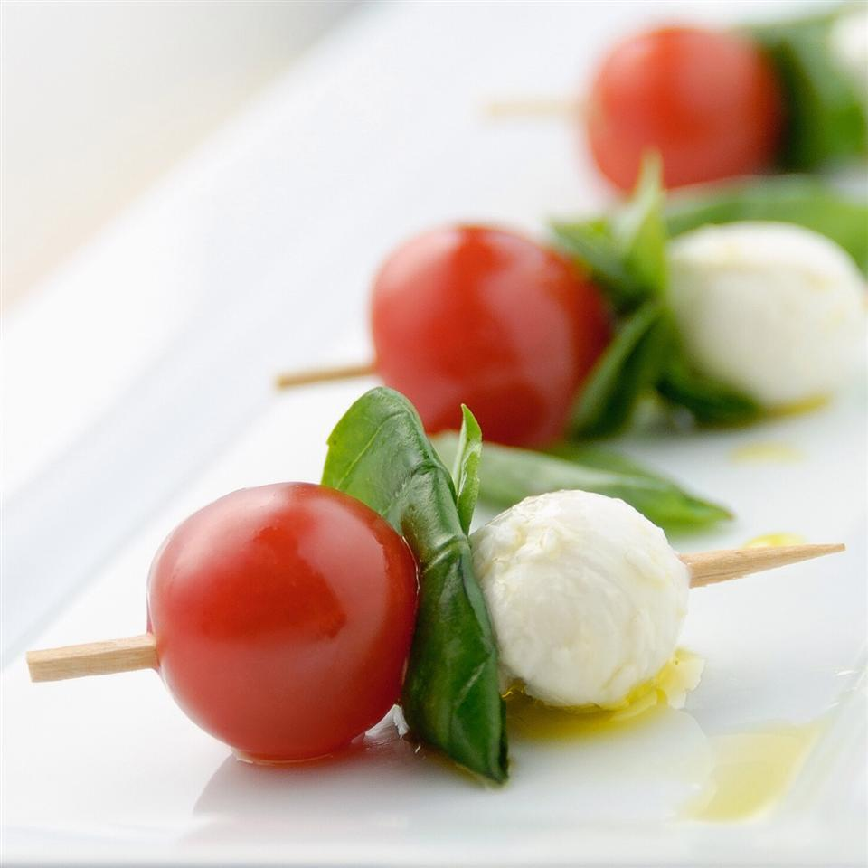

Caprese

Description
Easy appetizer to serve large parties
Ingredients
- 1 pint Cherry Tomatoes, halved
- 0.6 ounces fresh Basil Leaves
- 16 ounces fresh Mozzarella Balls
- Toothpicks
- 3 tablespoons Olive Oil
- Salt and Pepper
Steps
- Thread a tomato half, a small piece of basil leaf,
and a mozzarella ball onto toothpicks until all
ingredients are used. Drizzle the olive oil over
the tomato, cheese and basil, leaving the end of
the toothpick clean. Sprinkle with salt and pepper.
Serve immediately.